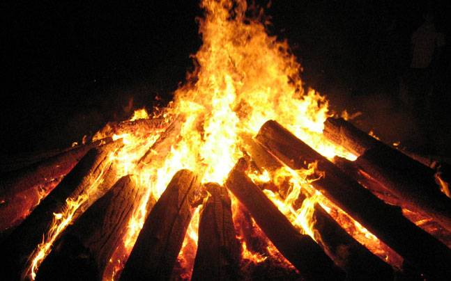

The culture of India is one of the oldest and unique. In India, there is amazing cultural diversity throughout the country. The South, North, and Northeast have their own distinct cultures and almost every state has carved out its own cultural niche. There is hardly any culture in
the world that is as varied and unique as India. India is a vast country, having variety of geographical features and climatic conditions. India is home to some of the most ancient civilizations, including four major world religions, Hinduism, Buddhism, Jainism and Sikhism.
A combination of these factors has resulted into an exclusive culture- Indian culture. Indian culture is a composite mixture of varying styles and influences. In the matter of cuisine, for instance, the North and the South are totally different. Festivals in India are characterized by
color, gaiety, enthusiasm, prayers and rituals. In the realm of music, there are varieties of folk, popular, pop, and classical music. The classical tradition of music in India includes the Carnatic and the Hindustani music.
CONTENT OVERVIEW (You can jump to the desired content also):
RELIGIOUS CULTURE
Indian-origin religions Hinduism, Jainism, Buddhism, and Sikhism, are all based on the concepts of dharma and karma. Ahimsa, philosophy of nonviolence, is an important aspect of native Indian faiths.
For generations, India has a prevailing tradition of the joint family system. It is when extended members of a family-parents, children, the children's spouses and their offspring, etc. - live together. Usually, the oldest male member is the head of the joint Indian family system.
He mostly makes all important decisions and rules, and other family members are likely to abide by them.
Bride in Sari and Groom in Sherwani in a Hindu Indian wedding
FESTIVALS
India is a country of dynamic culture, and every Indian celebrates many festivals wholeheartedly throughout the year. Every festival is unique in its way. Celebrating them while you pay a visit to the country is a great chance to explore the prosperity of Indian culture and heritage
MAKAR SANKRANTI
Falling on almost the same date every year, i.e. January 15, Makar Sankranti has different festivities associated with it. These are named as Lohri by North Indian Hindus and Sikhs and Uttarayan Gujaratis.

LOHRI CELEBRATIONS
HOLI
With the throwing of colored powder and water balloons, Holi has become known as India's most vivid, joyous festival. International travel groups selling tours to the country often place photos of boisterous Holi celebrations alongside pictures of the Taj Mahal.
Although the Hindu festival of colors finds its origins in South Asia, it has now gained popularity across the world, with Holi events organized across the U.S., the U.K. and elsewhere.
CUISINE
The cuisine of India is one of the world's most diverse cuisines, characterized by its sophisticated and subtle use of the many spices, vegetables, grains and fruits grown across India. The cuisine of each geographical region includes a wide assortment of dishes and cooking
techniques reflecting the varied demographics of the ethnically diverse Indian subcontinent. India's religious beliefs and culture have played an influential role in the evolution of its cuisine. Vegetarianism is widely practiced in many Hindu, Buddhist and Jain communities.
India's unique blend of cuisines evolved through large-scale cultural interactions with neighboring Persia, ancient Greece, Mongols and West Asia. New World foods such as chili peppers, tomatoes, potatoes and squash, introduced by Arab and Portuguese traders during the
sixteenth century, and European cooking styles introduced during the colonial period added to the diversity of Indian cuisine.
Indian Spices
Dosa
North Indian Food
Kebabs
CLOTHING
Clothing in India changes depending on the different ethnicity, geography, climate, and cultural traditions of the people of each region of India. Historically, male and female clothing has evolved from simple garments like kaupina, langota, dhoti, lungi, sari, gamcha, and
loincloths to cover the body into elaborate costumes not only used in daily wear, but also on festive occasions, as well as rituals and dance performances. In urban areas, western clothing is common and uniformly worn by people of all social levels.
Sometimes, color codes are followed in clothing based on the religion and ritual concerned. The clothing in India also encompasses the wide variety of Indian embroidery, prints, handwork, embellishment, styles of wearing cloths. A wide mix of Indian traditional clothing and
western styles can be seen in India.